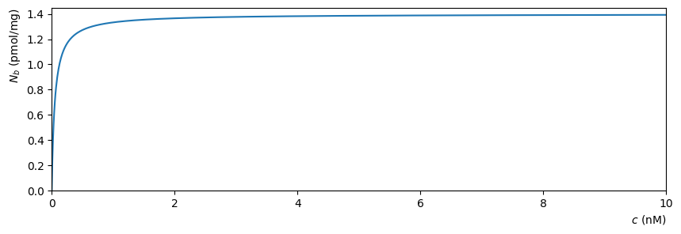
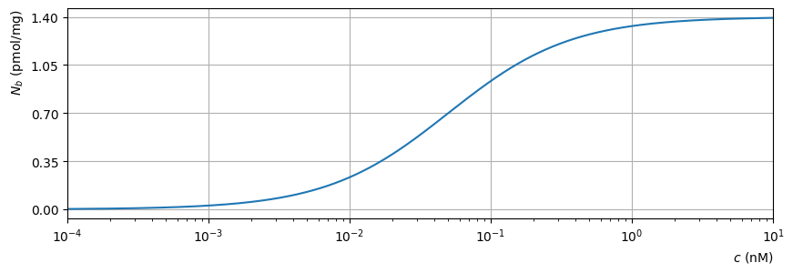

Molecular binding#
A biological sample with a concentration of \(N\) receptors per mg of tissue is immersed in a solution contanining a drug (ligand) at concentration \(c\).
According to the “lock and key model”, the concentration of bound receptors is given by the relationship below,in which \(k_d\) is a constant:
\[\begin{equation*}
N_b=\frac{c N}{k_d+c}.
\end{equation*}\]
Question 1#
Taking, \(N=1.4\), \(k_d=0.05\) reproduce the plot of the function shown below:

Question 2#
Lookup the logspace and semilogx functions and use these to produce a graph of the function in which the \(x\) axis is on a logscale (base 10). Change the \(y\) ticks and add axis labels and gridlines so that your plot looks like the one below
